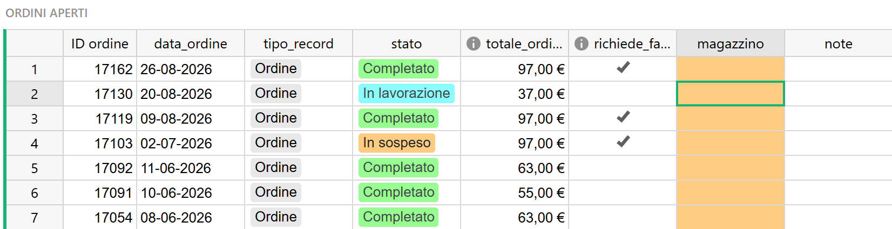
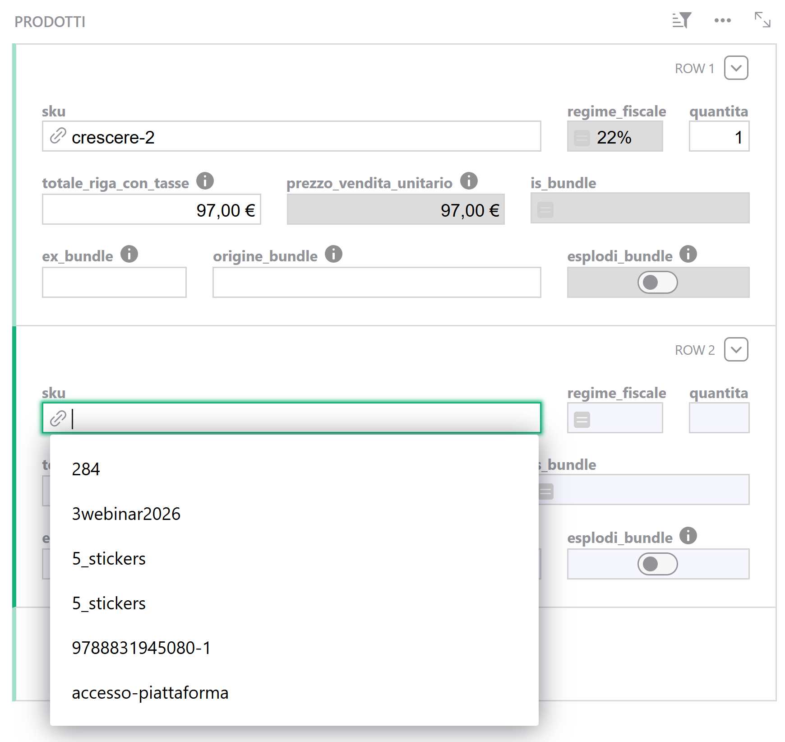
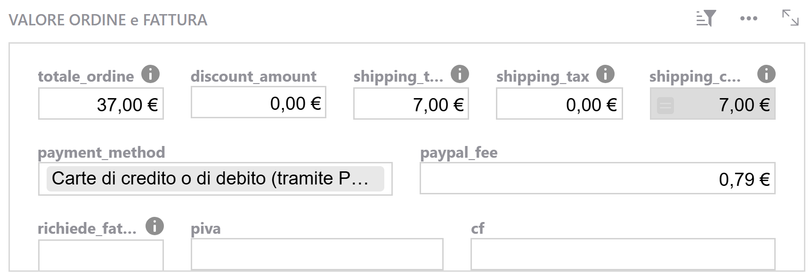
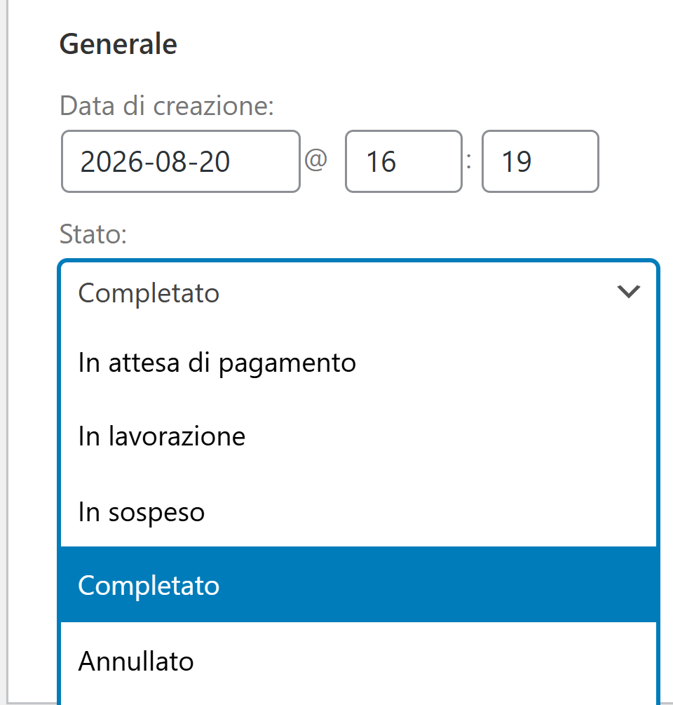

Guida 3
Ordini
Versione del 13/09/2026 · Sistema «Magazzino LwM»
La guida 0 racconta la strada che fa un ordine. Questa dice cosa fai tu lungo quella strada: assegnare il magazzino, controllare la fattura, inserire un ordine che non è arrivato dal sito, correggerne uno già esistente.
È la guida da tenere aperta quando lavori sugli ordini. Non parla di resi — quelli sono nella guida 4 — né di carichi di magazzino, che stanno nella guida 6.
§1 In breve
Gli ordini arrivano da soli. Quello che resta da fare sono quattro cose, e nessuna di queste il sistema può farla al posto tuo:
| Il gesto | Quando | Se non lo fai |
|---|---|---|
| Assegnare il magazzino | Ogni settimana, su Ordini Aperti | Le giacenze dei due magazzini restano più alte del vero |
| Controllare il campo della fattura | Sugli stessi ordini, nella stessa passata | Una vendita entra o esce dal Registro Corrispettivi quando non doveva |
| Inserire un ordine a mano | Quando un ordine non è arrivato, o non viene dal sito | Quella vendita non esiste: né a magazzino né per il commercialista |
| Correggere un ordine | Quando qualcosa non torna | Il numero sbagliato resta, e nessuno lo segnala |
E una regola che vale sopra tutte, perché è quella che si paga più cara: un ordine sbagliato si annulla, non si cancella. Sezione 11.
§2 Una tabella, quattro tipi di record
La tabella degli ordini non contiene solo ordini. Contiene quattro cose diverse, distinte dalla colonna del tipo (tipo_record), e vale la pena averle chiare adesso perché le incontri tutte nelle stesse pagine.
| Tipo | Cos'è | Chi lo crea | Segno delle quantità | Nei report? | Muove il magazzino? |
|---|---|---|---|---|---|
| Ordine | Una vendita | Il sistema, o tu a mano | Positivo | Sì | Sì |
| Reso | Un rimborso | Il sistema, o tu a mano | Negativo | Sì | Solo se la merce rientra |
| Approvvigionamento | Un carico di merce | Tu, a mano | Negativo | No | Sì |
| Altri movimenti | Tutto il resto | Tu, a mano | Dipende | No | Sì |
Le prime tre le trovi spiegate altrove: gli ordini qui, i resi nella guida 4, i carichi nella guida 6. Sui resi vale la stessa distinzione degli ordini: quelli dei rimborsi fatti su WooCommerce li scrive il sistema, mentre il reso di un ordine che avevi inserito a mano lo scrivi tu, perché su quell'ordine nessun automatismo interviene (guida 4). Sul quarto tipo, che è nuovo, serve qualche riga in più.
«Altri movimenti»: il tipo per i casi che non rientrano negli altri
Serve per la merce che si sposta senza che ci sia stata né una vendita né un acquisto: un trasferimento da un magazzino all'altro, la correzione di un ordine partito da due depositi, una rottura, un omaggio, un caso che non avevamo previsto.
Funziona come gli altri: uno stato, un magazzino, una data, e una o più righe con SKU e quantità. Non entra in nessun report — quindi non tocca niente di ciò che va al commercialista — e muove le giacenze come qualunque altro movimento.
C'è una seconda cosa da sapere, ed è la ragione per cui questa sezione contiene un'avvertenza in più delle altre: i movimenti eccezionali non hanno una pagina di presidio. La pagina Approvvigionamenti mostra solo i carichi e la sua colonna di avvisi si accende solo su quelli; le altre pagine di controllo riguardano i resi. Un movimento eccezionale lasciato incompleto — senza magazzino, o in uno stato che non conta — semplicemente non compare da nessuna parte.
L'unica rete è che, finché è incompleto, lo trovi in Ordini Aperti. Le procedure e la checklist sono nella sezione 12.
§3 La lista di lavoro: Ordini Aperti
È la pagina da cui comincia la settimana. Contiene tutto ciò che aspetta ancora qualcosa, e ci finisce per due motivi diversi, che conviene saper distinguere a colpo d'occhio.
┌─────────────────────────────┐
│ L'ordine è già chiuso? │
│ (Completato, Annullato, │
│ Rimborsato) │
└─────────────────────────────┘
│ │
NO │ │ SÌ
▼ ▼
┌──────────────────┐ ┌─────────────────────────┐
│ È in lista │ │ Ha un magazzino │
│ perché è ancora │ │ assegnato? │
│ in movimento │ └─────────────────────────┘
│ │ │ │
│ Non dipende │ NO │ │ SÌ
│ da te: aspetta │ ▼ ▼
│ un pagamento, │ È in lista esce dalla
│ una spedizione, │ perché lista da solo
│ una conferma │ aspetta te
└──────────────────┘ 👤 casella
arancione
Il primo caso è la coda naturale del negozio: ordini in lavorazione, in attesa di pagamento, in sospeso. Non chiedono niente, si chiudono da soli.
Il secondo è il tuo lavoro: un ordine già completato a cui nessuno ha detto da quale magazzino è partita la merce. È la casella arancione, ed è la ragione per cui questa pagina esiste.
La colonna del tipo. In questa lista può comparire anche un record che un ordine non è: un reso che ha ereditato un magazzino vuoto, un movimento eccezionale lasciato a metà. La colonna del tipo te lo dice, ed è il primo posto dove guardare quando una riga sembra fuori posto.
Questa pagina non deve svuotarsi. Una coda c'è sempre. Quello che guardi non è che sia vuota, ma che nessuno ci resti più a lungo del dovuto — un ordine completato senza magazzino da tre settimane è un problema, lo stesso ordine da tre giorni è normale amministrazione.
Cosa non ci trovi. Un ordine che non è mai arrivato in Grist. Una lista non può mostrare quello che non contiene, e questa in particolare non è una riconciliazione con il sito: se il sistema perde un ordine, te ne accorgi da una mail o non te ne accorgi affatto (guida 2).
I sette stati, e cosa fa ciascuno
| Stato | Resta in Ordini Aperti? | Entra nei report? | Muove il magazzino? |
|---|---|---|---|
| In attesa di pagamento | Sì | No | No |
| In lavorazione | Sì | No | No |
| In sospeso | Sì | No | No |
| Fallito | Sì | No | No |
| Completato | Solo se manca il magazzino | Sì | Sì |
| Rimborsato | Solo se manca il magazzino | Sì | Sì |
| Annullato | No | No | No |
Due righe meritano una nota.
Annullato è l'unico modo di far uscire un ordine dalla lista senza che conti. È il motivo per cui è lo strumento giusto per un ordine sbagliato (sezione 11).
Fallito, invece, resta in lista. Un pagamento non andato a buon fine non conta per niente — né report né magazzino — ma non esce dalla coda da solo. Se ne accumulano, sono rumore: valuta con Paolo se convenga portarli su Annullato o escluderli dalla vista.
{kind=link}

§4 Assegnare il magazzino
Il gesto più frequente del sistema: apri il menu a tendina sulla riga e scegli Magazzino Interno o Magazzino Cooperativa. Non c'è altro da fare, le giacenze si aggiornano da sole.
Tre cose che conviene sapere.
Il magazzino sta sulla testata, non sulle righe. Un ordine parte da un magazzino solo. Merce che esce da entrambi è un caso che il sistema non prevede: si gestisce con una correzione, ed è nella sezione 12.
Si assegna anche a ordine già chiuso. Anzi, è il caso normale: quando fai la passata settimanale, buona parte degli ordini è già su «Completato». Non c'è nessuna finestra da rispettare.
Finché la casella è vuota, quei pezzi sono in un limbo. Escono dal totale generale ma non da nessuno dei due magazzini: è il "venduto orfano" della guida 6. Non è un errore, è una coda — diventa un problema solo se ci resta.
Quando la casella non si accende. Gli ordini di soli prodotti virtuali — un corso, un ebook — non hanno merce da spedire e non chiedono nessun magazzino: nella pratica non ti restano mai in Ordini Aperti. Li trovi normalmente nella pagina Ordini, dove non si distinguono in nulla dagli altri, e la casella del magazzino vuota non è una dimenticanza.
§5 Il campo della fattura
È il campo più silenzioso e più pesante di tutta la tabella, ed è per questo che il controllo va fatto nella stessa passata dell'assegnazione del magazzino: le due colonne sono l'una accanto all'altra in Ordini Aperti, e guardarle insieme non costa un minuto in più.
Cosa decide. Se una vendita finisce nel Registro Corrispettivi oppure no. Acceso vuol dire «questa vendita è fatturata», e quindi fuori dal registro dei corrispettivi. Spento vuol dire «vendita senza fattura», e quindi dentro.
Come si compila da solo. Sugli ordini che arrivano dal sito lo calcola Grist quando il record nasce, guardando in quest'ordine: il dato del plugin fatture, poi la P.IVA e il codice fiscale, poi il documento richiesto dal cliente. Nella pratica funziona bene.
Come riconoscere un ordine da fatturare. Nella maggior parte dei casi te lo dicono i dati del cliente: se ha lasciato una partita IVA o un codice fiscale, o se ha chiesto fattura al momento dell'acquisto, il campo si accende da solo. Le due colonne della P.IVA e del codice fiscale le trovi nella pagina Ordini e nel riquadro dei valori della maschera di inserimento. Quando l'accordo è stato preso fuori dal sito — una scuola che chiede fattura per mail, un cliente che manda la P.IVA dopo — quel dato in WooCommerce non c'è, e il campo resta spento: è il caso in cui devi intervenire tu.
Puoi accenderlo e spegnerlo liberamente: nessun automatismo tornerà a sovrascrivere quello che scrivi.
§6 Inserire un ordine a mano
Serve in tre casi: un ordine che non è mai arrivato in Grist (te lo segnala una mail, guida 2), una vendita avvenuta fuori da WooCommerce, un ordine da rappresentante finché quel percorso non è collaudato.
Prima di aprire la maschera
Controlla che i prodotti esistano già nella tabella Articoli. Se manca qualcosa, crealo prima: la procedura è nella guida 5. Una riga con uno SKU che non si aggancia a nessun articolo è una riga cieca — niente regime fiscale, nessun effetto sulle giacenze — e si riconosce solo dalla riga arancione nella pagina delle righe d'ordine. Se l'articolo lo crei dopo, la riga non si aggancia da sola: va riselezionato lo SKU.
Se nell'ordine c'è un kit, controlla anche la sua ricetta nella tabella Bundle: devono esserci tutti i componenti, con le quantità giuste. Senza ricetta il kit non è un kit, e l'esplosione non partirà.
La maschera Inserimento Ordini, riquadro per riquadro
I quattro riquadri sono finestre sulla stessa riga: quello in alto è l'ordine, quello dei prodotti segue l'ordine selezionato sopra (guida 1).
1 · Anagrafica ordine. Data, tipo di record, stato, canale, cliente, più i due campi che valgono solo sui resi.
- Il numero dell'ordine si compila da solo e non va toccato: vedi il riquadro qui sotto.
- La data è quella dell'ordine, non quella in cui lo stai inserendo. Decide il giorno del Registro Corrispettivi e il trimestre del Report Art.74.
- Il tipo di record va messo su
Ordine. È un menu, e le altre voci portano altrove. - Lo stato: metti quello vero. Se la vendita è conclusa e la merce è partita,
Completato; se aspetti un bonifico,In attesa di pagamento. Ricorda che soloCompletatoeRimborsatofanno contare l'ordine. - L'ordine di origine e il motivo del reso sono grigi, e devono restarlo: si accendono solo quando il tipo di record è
Reso. Se stai inserendo un reso e non un ordine, la procedura cambia in alcuni punti ed è nella guida 4.
2 · Valore ordine e fattura. Il totale complessivo, le spese di spedizione con la loro IVA, il metodo di pagamento, e poi il campo della fattura con la P.IVA e il codice fiscale se servono.
- Sugli ordini inseriti a mano il pagamento è di norma un bonifico: la casella delle commissioni PayPal resta a zero, ed è corretto.
- Lo sconto non è necessario: gli sconti sono già dentro i totali delle righe.
- Le spese di spedizione vanno qui, sulla testata, non su una riga prodotto: è da qui che il Registro Corrispettivi le prende. Le caselle da compilare sono due — l'imponibile e la sua IVA — perché nel report la spedizione entra al lordo come tutto il resto. La terza, quella che le somma, è grigia: si calcola da sola.
- Il campo della fattura si controlla adesso, che è la fine dell'inserimento dei dati del cliente (sezione 5).
3 · Spedizione. Il magazzino e, se ti serve, l'indirizzo. Il magazzino puoi metterlo subito: è l'unico momento in cui hai tutto sott'occhio.
4 · Prodotti. Una riga per articolo:
- SKU — si digita e si sceglie dal menu a tendina.
- Quantità — positiva, sono pezzi che escono.
- Totale di riga con imposta — è il valore lordo della riga, ed è il numero su cui è costruito tutto il Registro Corrispettivi. Scrivilo con attenzione: è l'unico dato economico della riga che conta davvero.
- Il prezzo unitario e il regime fiscale si calcolano da soli. Il regime esce dall'articolo: se ti sembra sbagliato, il posto da correggere è l'anagrafica, non la riga.
- La casella
is_bundlesi accende da sola quando lo SKU è un kit mappato. Se sai di aver inserito un kit e resta spenta, la ricetta in Bundle non c'è: fermati e sistemala, altrimenti quella vendita non scaricherà nulla. - Le caselle
ex_bundleeorigine_bundlesi compilano solo nel caso descritto alla fine della sezione 7. Normalmente si lasciano stare.
5 · Infine, i kit. Se c'è una riga-kit, accendi l'esplosione: sezione 7.
Perché funziona così — il numero dell'ordine se lo dà il sistema
Gli ordini che arrivano da WooCommerce hanno numeri alti, sopra 17000. Gli ordini inseriti a mano usano invece una numerazione bassa che parte da 1, e il sistema la assegna da solo: quando crei un nuovo record, cerca il numero più alto già usato sotto quella soglia e prende il successivo.
Le due numerazioni non si incontreranno mai, ed è questo che le tiene separate: gli automatismi cercano gli ordini per numero, e un ordine inserito a mano con un numero "da WooCommerce" verrebbe scambiato per qualcos'altro.
Quindi: il numero non si tocca, né sui record nuovi né su quelli esistenti. Cambiarlo a mano su un ordine arrivato dal sito è peggio ancora — il prossimo aggiornamento non lo riconoscerebbe più e ne creerebbe un doppione.
{kind=link}

{kind=link}

§7 Un kit dentro un ordine
Un kit non ha giacenza propria: quello che si muove sono i pezzi che contiene. Perché il magazzino scali, accanto alla riga del kit devono comparire le righe dei suoi componenti.
Se l'ordine arriva dal sito, ci sono già. Il sistema le scrive da solo: le riconosci perché stanno sotto la riga-kit e valgono zero. Non c'è niente da fare.
Se l'ordine lo inserisci tu, l'esplosione la avvii tu. Sulla riga del kit accendi la casella esplodi_bundle. Nel giro di qualche secondo:
- compaiono le righe dei componenti, a prezzo zero, con la quantità già moltiplicata;
- si accende la casella
bundle_esploso; - la casella che hai acceso si rispegne da sola.
Se dopo qualche minuto non è successo niente, non riaccenderla a ripetizione: è un caso da guida 9.
Il caso raro: scrivere i componenti a mano. Se per qualsiasi motivo scrivi tu le righe dei pezzi invece di usare la casella, allora devi compilare a mano anche i due campi che dicono da dove vengono: la casella che marca la riga come pezzo di un kit, e il campo con lo SKU del kit d'origine. Non sono cosmetici: senza il secondo, se un giorno quel kit tornasse indietro, il rientro dei pezzi non si aggancerebbe alla riga del kit e il magazzino non si ricaricherebbe.
Costruire e modificare i kit è nella guida 5. Come si comporta un kit quando torna indietro, nella guida 4.
§8 Leggere le righe di un ordine
La pagina Righe_Ordine è dove si va quando bisogna capire cosa è successo davvero: mostra tutte le righe di tutti i record, con le colonne di controllo in vista. Ha tre aiuti di lettura che vale la pena riconoscere.
| Cosa vedi | Cosa vuol dire |
|---|---|
| La colonna dell'ordine a bande azzurre alternate | Cambia tonalità a ogni cambio di ordine. Serve solo a vedere dove finisce un ordine e comincia il successivo |
| La cella dello SKU colorata | Il colore è la serie a cui appartiene l'articolo: rosso per Down Under, verde per Savannah, e così via |
| Una riga accesa in arancione | Un controllo è scattato: lo SKU non si è agganciato a nessun articolo, oppure la quantità ha il segno sbagliato |
Due filtri comodi in cima alla pagina ti permettono di isolare un trimestre o un singolo SKU: si cambiano liberamente (guida 8).
§9 Sostituire un prodotto dentro un kit
Capita: il kit prevede lo zaino verde e hai spedito quello blu, oppure il titolo previsto era esaurito e ne hai messo un altro. La merce uscita dal magazzino non è quella che il sistema pensa sia uscita, e va corretta.
La procedura è una sola, e sta sulla riga. Dalla maschera Inserimento Ordini, riquadro dei prodotti — oppure dalla pagina delle righe d'ordine — trova la riga del componente sbagliato e cambia lo SKU, scegliendo quello effettivamente spedito. Non toccare nient'altro della riga: la quantità, il segno e i campi che la legano al kit restano come sono.
Cosa cambia dopo la sostituzione, e qui c'è una cosa che sorprende quasi tutti:
- Le giacenze si sistemano subito, ed è il motivo per cui la correzione si fa. Il pezzo sbagliato torna disponibile, quello giusto scala.
- Il Report Art.74 cambia. In quel report i kit non compaiono: compaiono i loro pezzi, ciascuno con il proprio regime fiscale, contati a copie e valorizzati al prezzo di copertina. Se sostituisci un libro in Art.74 con uno al 4%, quella copia esce dal report; se fai il contrario, ci entra.
- Il Registro Corrispettivi non cambia di un centesimo. Lì il valore della vendita sta tutto sulla riga del kit, sotto il regime del kit, e le righe dei pezzi valgono zero.
Le due ultime righe insieme sono controintuitive — lo stesso pezzo pesa in un report e non nell'altro — ma sono coerenti: un report conta copie di libri, l'altro conta incassi per regime. Il trattamento fiscale dei componenti dentro un kit a regime diverso è comunque una delle questioni ancora da porre al commercialista (guida 7).
§10 Modificare un ordine
Puoi correggere quasi tutto: quantità, valori, dati del cliente, indirizzo, note. Quello che scrivi resta — nessun automatismo tornerà a sovrascriverlo — e vale solo in Grist.
Tre cose da non fare senza pensarci:
Cambiare la data. Sposta tutte le righe dell'ordine in un altro giorno, e quindi potenzialmente in un altro trimestre. Su un periodo già consegnato al commercialista è una modifica che va concordata, non fatta.
Cambiare il numero dell'ordine. È l'aggancio con cui gli automatismi lo riconoscono: cambiato quello, il prossimo aggiornamento non lo trova più e ne crea un doppione (sezione 6).
Scrivere in una cella grigia. Non dà errore: dà un valore che il sistema ignora o riscrive, lasciandoti convinta di aver fatto qualcosa.
§11 Annullare, non cancellare
C'è un ordine che non doveva esserci: una prova, un doppione, un acquisto mai perfezionato. Tre gesti sembrano risolverlo. Solo uno funziona.
1. ANNULLI l'ordine su WooCommerce ✅ è la strada giusta
────────────────────────────────
stato → «Annullato»
│
▼ il cambio di stato arriva in Grist
l'ordine esce dai report, smette di muovere il magazzino,
esce da «Ordini Aperti». Resta visibile: è storia, non sporcizia.
2. CANCELLI o CESTINI l'ordine su WooCommerce ❌ il peggiore
──────────────────────────────────────────
spariscono le tracce sul sito
│
▼ in Grist NON arriva niente
l'ordine resta in Grist esattamente com'era:
continua a scaricare il magazzino,
continua a entrare nei report del trimestre.
Nessun avviso. Nessuna mail. Niente.
3. CANCELLI la riga in Grist ❌ definitivo
─────────────────────────
la riga sparisce
│
▼ ovunque, e per sempre
dall'elenco, dalle giacenze, dai report, dallo storico.
E se l'ordine esisteva su WooCommerce, non tornerà da solo:
nessun automatismo lo riscriverà.
{kind=link}

Lo stesso vale per un rimborso. Se annulli un rimborso su WooCommerce, in Grist non arriva niente: il record di reso resta, continua a stornare nei report e, se avevi dichiarato il rientro della merce, tiene quella copia in magazzino. Si sistema con lo stesso gesto — si porta il reso su Annullato, non si cancella (guida 4). (comportamento atteso, non ancora verificato sul campo)
§12 Movimenti eccezionali: trasferimenti e correzioni
Le due procedure che useresti più spesso con il tipo Altri movimenti. Hanno la stessa forma, perché in fondo sono lo stesso movimento.
Trasferire merce da un magazzino all'altro
Il magazzino sta sulla testata, quindi un solo record non può togliere da un deposito e aggiungere all'altro: servono due record, uno per magazzino.
Cinque copie che si spostano dal Magazzino Interno alla Cooperativa:
MAGAZZINO INTERNO MAGAZZINO COOPERATIVA
la merce ESCE la merce ENTRA
───────────────── ──────────────────────
Record «Altri movimenti» Record «Altri movimenti»
magazzino: M1. Interno magazzino: M2. Cooperativa
stato: Completato stato: Completato
data: quella dello spostamento data: quella dello spostamento
└─ riga: SKU-123 +5 └─ riga: SKU-123 −5
▲ ▲
positivo = esce negativo = entra
Interno: −5 copie Cooperativa: +5 copie
Totale complessivo: invariato. Ed è giusto: non è entrato né uscito niente.
Correggere un ordine partito da due magazzini
Un ordine di dieci copie: sette dall'Interno, tre dalla Cooperativa. Il sistema non prevede il caso, quindi:
- sull'ordine assegni il magazzino da cui è uscita la parte più grande — qui l'Interno. Tutte e dieci le copie risultano uscite da lì;
- poi correggi la differenza, ed è esattamente il trasferimento di sopra: le tre copie di troppo scaricate dall'Interno vanno rimesse lì, e tolte alla Cooperativa. Due record «Altri movimenti», −3 sull'Interno e +3 sulla Cooperativa;
- nelle note di entrambi scrivi il numero dell'ordine che stai correggendo. Fra sei mesi è l'unica cosa che ti dirà perché esistono.
La checklist, perché qui non ci sono avvisi
Su questi record nessuna colonna si accende. Prima di chiudere, controlla cinque cose:
- [ ] il tipo è
Altri movimenti; - [ ] lo stato è
Completato— con qualunque altro valore il record esiste, si vede, e non muove niente; - [ ] il magazzino è valorizzato;
- [ ] il segno delle quantità è quello giusto: positivo se la merce esce da quel magazzino, negativo se entra;
- [ ] la data non è anteriore alla data della giacenza iniziale di quel magazzino, altrimenti il movimento viene semplicemente ignorato (guida 6).
Su stato e magazzino c'è una rete: finché mancano, il record ti aspetta in Ordini Aperti. Sul segno e sulla data, invece, sei sola — e lo stesso vale per un record salvato senza nessuna riga, che non compare in nessuna lista perché non ha niente da segnalare.
Con questo stesso tipo di record si registrano altre tre cose, che hanno la loro procedura altrove perché chi le fa sta pensando ad altro. Due riguardano il magazzino e stanno nella guida 6: la differenza trovata contando i pezzi di un deposito, e lo spostamento di pezzi da un articolo vecchio a uno nuovo quando un prodotto è stato sostituito. La terza riguarda i resi ed è nella guida 4: il rientro di una parte sola di un kit, che le caselle del reso non sanno esprimere — si chiude il reso per intero e si registra qui la differenza, una riga per pezzo, con l'avvertenza sul segno che vale per tutta questa sezione.
§13 Ordini da rappresentante
Gli ordini raccolti dai rappresentanti passano dal sito come tutti gli altri: arrivano in Grist, compaiono in Ordini Aperti, chiedono il magazzino, entrano nei report. Non c'è niente di diverso da fare.
Oggi non si distinguono dagli ordini diretti. Il campo del canale viene scritto come woocommerce su tutti, e i campi previsti per l'agente e le provvigioni restano vuoti. Per completare quella parte serve un ordine reale: finché non ne passa uno, non si sa dove il plugin depositi quei dati.
Nel frattempo puoi correggere il canale a mano. Fra le scelte c'è già la voce ambassador: metterla su un ordine è del tutto innocuo, perché oggi nessuna formula e nessun report leggono quel campo. Serve solo a te, se vuoi tenerne traccia da subito.
Se un ordine da rappresentante non arriva, la strada è quella di sempre: lo inserisci a mano (sezione 6).
§14 Attenzione a
I cinque errori che questa guida serve a evitare. Nessuno di questi produce un messaggio di errore.
Cancellare invece di annullare. Su WooCommerce l'ordine resta in Grist e continua a contare; in Grist sparisce da tutto, compreso lo storico.
Dare per scontato che una modifica fatta sul sito arrivi. Arrivano solo lo stato e i rimborsi. Quantità, prezzi e righe aggiunte no.
Lasciare il campo della fattura come lo trovi. Su un ordine inserito a mano nasce sempre spento, e non si riallinea mai da solo.
Correggere l'articolo o la ricetta del kit per sistemare un ordine solo. Il primo riscrive il passato, la seconda cambia il futuro. Quello che vuoi correggere è una riga.
Registrare un movimento eccezionale con il segno invertito. È l'unico tipo di record su cui nessun controllo guarda il segno, ed è anche l'unico senza una pagina che lo sorvegli.
§15 Se qualcosa va storto
| Il sintomo | Cosa guardare |
|---|---|
| Un ordine c'è su WooCommerce ma non in Grist | Guida 2, poi lo inserisci a mano (sezione 6) o lo fai rilanciare a Paolo |
| Una riga è accesa in arancione | Lo SKU non si è agganciato a nessun articolo: correggilo, oppure crea l'articolo (guida 5) e poi riseleziona lo SKU sulla riga |
| Un kit non ha i suoi pezzi sotto | L'esplosione non è partita. Se è un ordine, sezione 7; se è un reso, guida 4 |
| Le giacenze di un magazzino non tornano | Comincia dagli ordini senza magazzino in Ordini Aperti, poi guida 6 |
| Un ordine è in Ordini Aperti e non capisci perché | Figura 1, poi la colonna del tipo: potrebbe non essere un ordine |
| Un ordine cancellato sul sito è ancora in Grist | Guida 9 |
§16 Dove si continua
| Se vuoi… | Guida |
|---|---|
| Capire cosa fanno gli automatismi e che mail mandano | 2 |
| Chiudere un reso, capire le due caselle | 4 |
| Creare un articolo, completare quelli automatici, costruire o modificare un kit | 5 |
| Leggere le giacenze, fare un inventario, registrare un carico di merce | 6 |
| Preparare i report per il commercialista | 7 |
| Cambiare un filtro, cercare, esportare | 8 |
| Rimediare a un ordine cancellato, riaccendere un automatismo, segnalare un problema | 9 |